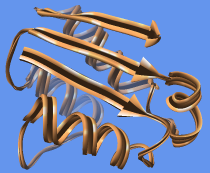

| Barstar (1bta) ribbon with Chimera default scaling in the style named aitch |
|---|
|  |
Ribbon Style Editor allows ribbon scalings, styles, and residue classes to be edited directly and/or named and saved for subsequent use.
Ribbons for peptides, proteins, and nucleic acids can be displayed using the command ribbon or Actions... Ribbon... show. Ribbon style can be switched with ribrepr or Actions... Ribbon... style-name. Ribbon scaling can be switched with ribscale.
There are several ways to start Ribbon Style Editor, a tool in the Depiction category. It has three panels shown as index cards:
Close dismisses the dialog, and Help opens this manual page in a browser window.The scaling of a ribbon is its secondary-structure-specific dimensions. Named scalings can be accessed with the command ribscale.
Known problem: reassigning secondary structure (for example, by using ksdssp) sets the scaling of some residues to Chimera default; any other scalings previously in effect need to be reapplied.
In the Scaling panel of the Ribbon Style Editor, changes can be entered directly, or the arrows on either side of a field can be clicked to increase or decrease the value by 0.05-angstrom increments. Only values greater than zero are allowed. Changes will not take effect until either Apply or OK is clicked; OK also dismisses the panel. Restrict OK/Apply... allows the scaling to be applied to only the current selection. If a scaling has been named, it can also be applied using the command ribscale.
If a ribbon were laid out on a flat surface, width would be the dimension parallel to the surface but perpendicular to the long axis of the ribbon, and height would be the dimension normal to the surface. The Width and Height values are doubled to give the maximum ribbon dimensions (the dimensions mapped to the cross-section grid). For example, with any of the built-in styles, a Width of 0.9 yields a ribbon 1.8 Å wide.
Nucleic acid structures are shown with the Nucleic ribbon. For proteins, Helix and Sheet assignments are taken from the input structure file or generated with ksdssp; the remainder is shown as Turn. Strands (the Sheet segments) are shown by default as arrows pointing in the C-terminal direction. To also show helices as arrows, see below. Setting the Arrow (tip) and Arrow (base) widths the same as the Sheet width turns off the arrow appearance. Setting the Arrow tip and base widths equal to the Turn width also turns off the arrow appearance but shortens the strand somewhat. Setting all the widths equally small generates a simple spaghetti-like representation.
The settings in the Scaling panel collectively define a scaling, which can be named, saved, and later retrieved from the pulldown list indicated by the solid black triangle next to the Ribbon Scaling field. When the name of a built-in scaling (Chimera default or licorice) is shown, it is only possible to save to a different name, using Save As.... When another name is shown, it is possible to:
The Arrow parameters apply only to strands, not helices. To show arrowheads at the ends of helices, the workaround is to reassign the secondary structure of the last residue in each helix as strand. This can be done with commands something like:
Command: setattr r isHelix false :18.a,41.a,59.a,17.bor by selecting the residues and changing their secondary structure attribute values in the Selection Inspector.
Command: setattr r isStrand true :18.a,41.a,59.a,17.b
| Custom style "aitch" |
|---|

|
The style of a ribbon is defined by its cross section (general shape perpendicular to the long axis) and how the cross section is smoothed. Named styles can be accessed with the command ribrepr and from the Actions... Ribbon menu.
In the Cross Section panel of the Ribbon Style Editor, a cross-section can be defined by placing points on a grid. The Number of grid divisions can be adjusted as needed for the complexity of the desired cross-section. A ribbon with a particular cross-section is subject to whichever scaling is in effect. The extent of the grid X-axis equals the width and the extent of the grid Y-axis equals the height. Using the built-in styles as examples:
A style is further defined by Display Options:
The settings in the Cross Section panel collectively define a style, which can be named, saved, and later retrieved from the pulldown list indicated by the solid black triangle next to the Ribbon Cross Section field. When the name of a built-in style is shown, it is only possible to save to a different name, using Save As.... When another name is shown, it is possible to:
A ribbon residue class is defined by which atoms control the path of the ribbon and which atoms are considered part of the backbone (mainchain atoms). The path of the ribbon is controlled by two atoms per residue: the guide atom sets ribbon location (the path is smoothed over five successive residues), and the orientation atom sets the plane of the ribbon.
By default, when ribbon is shown, mainchain atoms are hidden and their locations are adjusted to fall on the ribbon (see the command ribbackbone).
| Built-in Ribbon Residue Classes | |||
|---|---|---|---|
| class | guide atom | orientation atom | mainchain atoms |
| amino acid | CA | O | N,CA,C,O |
| nucleic acid | C5' | C1' | P,O1P,O2P,O3P,O5',C5',O3' |
The Residue Class panel of the Ribbon Style Editor allows new ribbon residue classes to be defined. Names for the Guide atom, Orientation atom, and Mainchain Atoms must be supplied; letters in these names are automatically entered in uppercase. A mainchain atom's Position is how far along a residue's ribbon segment the atom is placed when adjusted to fall on the ribbon (possible values range from 0 to 1). Clicking Set adds the contents of the Name and Position fields to the Mainchain Atoms list. Choosing (clicking) an entry in the list and then clicking Remove deletes that entry.
Further Options:
The settings in the Residue Class panel collectively define a ribbon residue class, which can be named, saved, and later retrieved from the pulldown list indicated by the solid black triangle next to the Ribbon Residue Class field. When the name of one of the built-in classes is shown, it is only possible to save to a different name, using Save As.... When another name is shown, it is possible to: